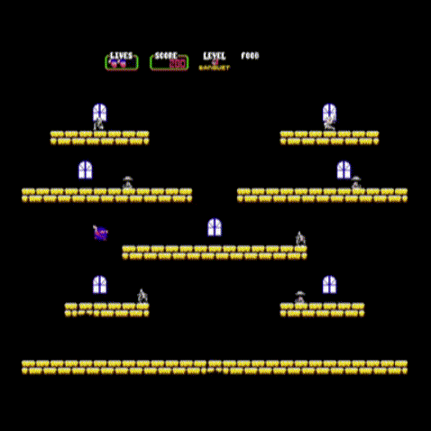
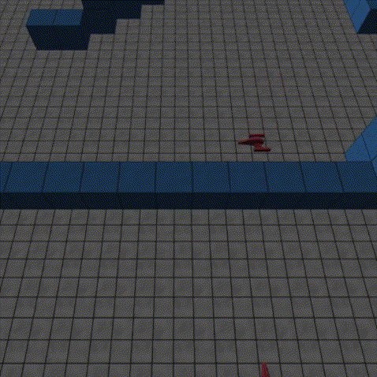
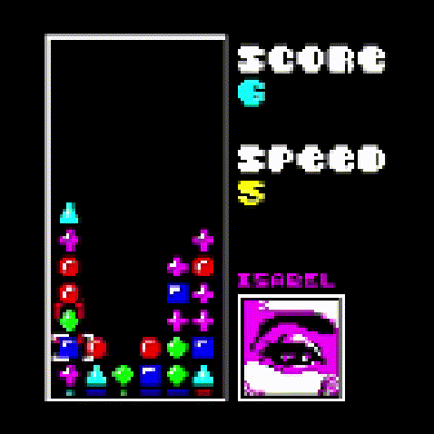
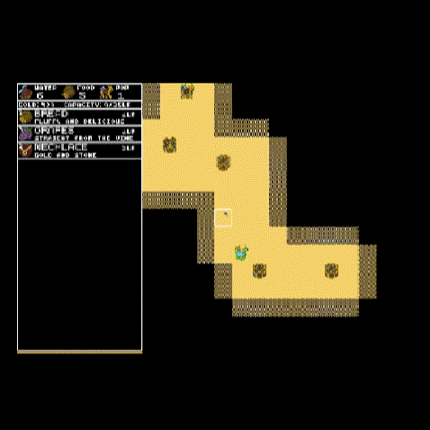

Duck March, 2026
Duck March, 2026
Rhythm puzzle adventure game written in 2 weeks for LowRez Jam 2026
- Targets both Linux and the web using Xlib, Emscripten, and OpenGL
- Snake meets Frogger mechanics with thoughtfully designed rhythm puzzles
- 4800 new lines of C, 25+ levels, multiple bespoke mechanics and minigames
Browse the code or play online

Crumble King, 2024
Polished retro arcade platformer written in the Odin language
- Complete design featuring 6 levels, 3 playable characters, and secret modes
- Tandy style audio system synthesizing music tracks and sound FX in real time
- Targets both Windows and Linux using SDL 2 for windows and sprites
Browse the code or download and play
 Empedocles, 2026
Empedocles, 2026
SIMD accelerated, multithreaded software pathtracer in x86 assembly
- Profiled and optimized with automated tooling, cache-local data patterns, and CPU friendly algorithms
- Realistic simulation of dielectric materials, motion and focal blur
- Runs at 60fps rendering 8 cubes at 480x480 resolution and 4 samples per pixel
Browse the code
 Netpong, 2025
Netpong, 2025
Online multiplayer Pong clone written like a first-person shooter
- Custom UDP transport layer supporting bit packing of network packets, session management, and network latency/packet loss simulation
- Overwatch and Rocket League inspired netcode featuring client-side prediction of both local and remote players
- Multiple server configurations including standalone and client hosted with any combination of local, remote, and/or bot players
Browse the code

Ceres, 2026
Asteroids inspired 3D shooter prototype in a data driven OpenGL engine
- Data driven pipeline with asset packing and code generation in the build step
- Hot reloadable code using a dynamically linked game layer updated at runtime
- OpenGL based 3D renderer with textured meshes, Blinn-Phong lighting, high-quality text, and anchor-based GUI layout system
Browse the code

Panelpon, 2025
Fast-paced tile matching puzzler expanding on the design of Panel de Pon
- Abstracted the rules of Panel de Pon, keeping underlying logic consistent with 9 different control schemes
- Polished retro style featuring palletized sprite rendering and synthesized audio
Browse the code

Caravan, 2024
Minimalist trading simulation game written in 48 hours for MicroJam 22
- Simulated regional supply and demand based on distances between trading nodes and player actions
- Targets both Windows and Linux using SDL 2 for graphics and sound
Browse the code or download and play